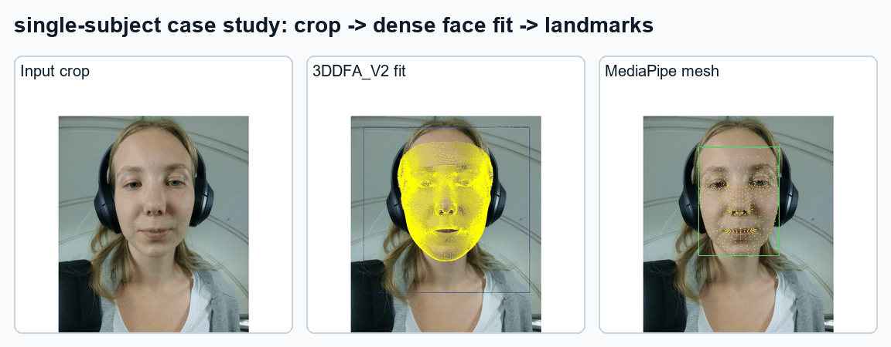
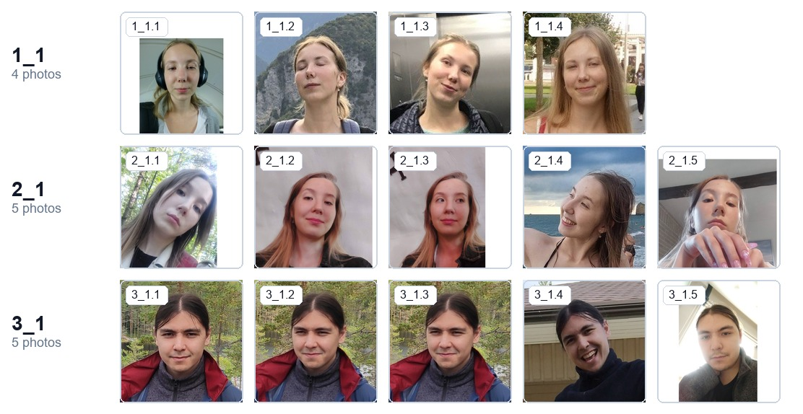
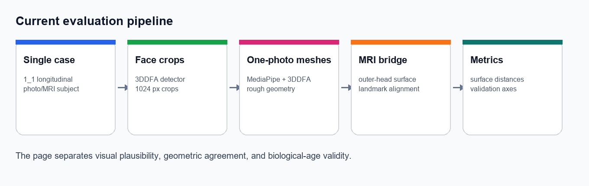
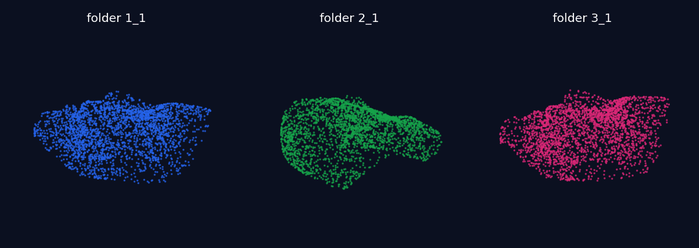
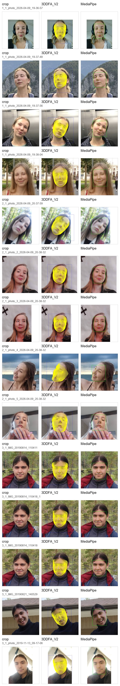
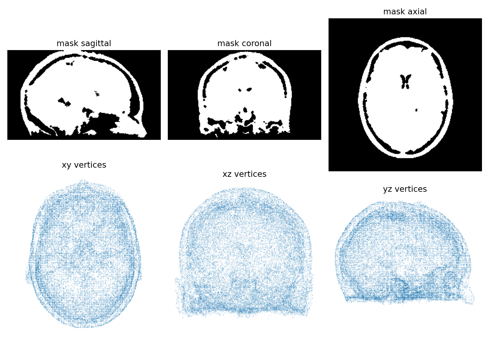
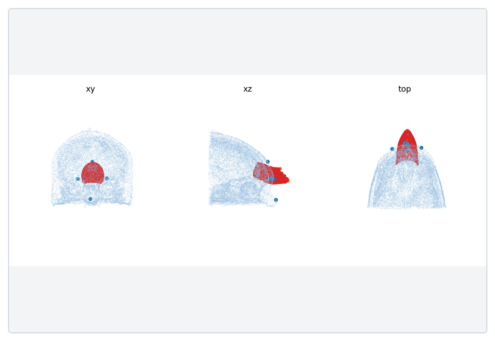
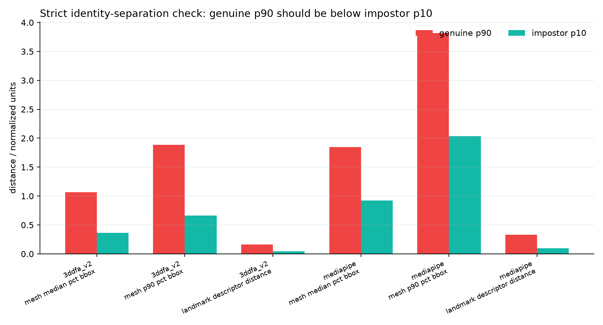

A Gaussian-splatting-style visual article page for face crops, one-photo 3D baselines, MRI alignment, and identity-consistency checks across known folders.
This page is intentionally formatted as a paper/project page: title, authors, teaser, abstract, method, visual results, quantitative diagnostics, limitations, and next baselines.

Single-image avatar methods can produce visually plausible faces, but visual plausibility alone is not enough for biological-age or identity-sensitive research. This pilot defines a practical evaluation scaffold for comparing one-photo face avatars against repeated photos and an MRI-derived outer-head surface. The current snapshot uses three known folder labels, two lightweight geometry baselines, and a supervised same-person versus different-person consistency test.
The main finding is negative but useful: MediaPipe and 3DDFA provide reliable preprocessing and visualization, yet they do not pass a strict identity-separation criterion. The page therefore treats them as lower-bound baselines before stronger avatar methods such as MeshLAM/LAM, MICA, DECA, EMOCA, or Gaussian-splatting-based reconstructions.
The page uses folder labels only. It does not infer identity from faces. Locally available folders are 1_1, 2_1, and 3_1; 1_2 and 1_3/photos are currently empty on disk.

This is a baseline pipeline, not yet a final avatar method. It turns photos into standardized crops, estimates rough meshes, aligns them to an MRI-derived outer-head surface, then checks consistency across repeated photos.

Does the overlay look reasonable on the input image?
Are same-folder avatars closer than different-folder avatars?
Does a face signal track aging, lifestyle, MRI, or outcomes?
3DDFA and MediaPipe give usable detection and rough facial geometry. They are not yet a MeshLAM/MATCH-level high-fidelity avatar and should be treated as the floor for better methods.

Point-cloud render from 3DDFA meshes for one representative photo per known folder.

All 14 crops with 3DDFA and MediaPipe overlays for rapid inspection.
MRI comparison is useful, but posture and soft tissue matter. Supine MRI and upright photos should not be treated as the same facial surface in eyelids, cheeks, jawline, or submental regions.

Current MRI-derived surface used for coarse face-to-head alignment.

Preview panels from the current automatic alignment pipeline.
A Face-ID-style geometric constraint is framed as a supervised separation test: same-folder pairs are genuine, different-folder pairs are impostor. The strict acceptance rule is genuine p90 below impostor p10.

| Finding | Interpretation |
|---|---|
| 26 genuine pairs and 65 impostor pairs per method | Enough for a first diagnostic distribution, not enough for a general identity benchmark. |
| No current metric passes genuine_p90 < impostor_p10 | The baseline is not identity-separable enough for Face ID-grade avatar claims. |
| MediaPipe/3DDFA still detect all crop photos | They are useful as preprocessing and QC baselines before stronger avatar methods. |
Twin literature supports the premise that perceived facial age is biologically meaningful, but modern AI FaceAge models still need twin-controlled validation.
Perceived age in Danish twins predicts survival and function, even under within-pair designs.
Facial age and methylation age may capture distinct aging axes; do not collapse them into one clock.
No deep-learning FaceAge model is established as validated on MZ/DZ twin cohorts.
This is an evaluation scaffold, not a finished avatar system. Current MRI alignment uses automatic proxy landmarks and therefore cannot yet support clinical or biometric accuracy claims. Current meshes do not model hair, ears, full skull, or scanner-related MRI artifacts.
| Risk | Control planned in the next iteration |
|---|---|
| Supine MRI versus upright photo posture | Separate rigid alignment error from soft-tissue/posture deformation. |
| One-photo avatar hallucination | Compare repeat photos, stronger baselines, and same-folder consistency. |
| Surface distance overfitting | Add anatomical landmarks, HD95/Hausdorff, ASSD, Chamfer, and masked facial regions. |
| Biological-age overclaiming | Keep FaceAge, MRI geometry, and methylation/twin evidence as related but distinct axes. |
Run MeshLAM/LAM, MICA, DECA, or EMOCA once model assets and compute are available.
Build scanner-artifact-resistant MRI face masks and add manual or semi-automatic landmarks.
Report robust surface distances, perceptual review, identity separation, and cross-year consistency.
The visual format follows modern neural-rendering project pages: a compact title block, animated teaser, method figure, qualitative panels, quantitative diagnostics, and limitations.
| Reference | Why it matters here |
|---|---|
| 3D Gaussian Splatting project page | Canonical visual article layout for neural rendering results. |
| MATCH | Avatar/reconstruction page structure with strong qualitative visuals. |
| MeshLAM | Relevant high-quality one-image mesh/avatar baseline candidate. |